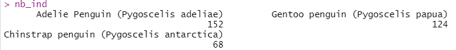

Ce tutoriel est adapté de Getting started with R and RStudio du site Our Coding Club.
Pour savoir comment installer R et RStudio, cliquez ici
Introduction
Qu’est-ce que R ?
R est un langage de programmation statistique qui a rapidement gagné en popularité dans de nombreux domaines scientifiques.
Il a été développé par Ross Ihaka et Robert Gentleman, du Département de Statistiques de l’Université d’Auckland, comme implémentation libre du langage de programmation S.
| 1991 | Création du langage R |
| 1993 | R est dévoilé au public |
| 1996 | Article dans le Journal of Computational and Graphical Statistics |
R désigne également le logiciel qui utilise ce langage pour des calculs statistiques (et tout un tas d’autres applications (calculs, graphiques, …).
Il dispose d’une communauté en ligne très active ainsi que d’extensions pour presque tous les domaines et applications possibles et imaginables (cartographie, fouille de texte, modélisation, …).
Contrairement à d’autres logiciels de statistiques comme Minitab ou SPSS, R peut être exécuté entièrement en ligne de commande et ne nécessite pas d’interface graphique, ce qui lui confère une grande flexibilité.
- C’est un outil libre et open source (tout le monde peut utiliser le code et voir comment il fonctionne)
- C’est un langage de programmation plutôt qu’une interface graphique, ce qui permet à l’utilisateur de sauvegarder facilement des scripts sous forme de texte pour les ré-utiliser ou les partager
- Beaucoup de personnes l’utilisent dans beaucoup de domaines différents - il est rare d’être confronté à un problème qui n’a jamais été résolu !
Naviguer dans RStudio
En ouvrant RStudio, vous verrez une fenêtre comme celle ci-dessous, qui se divise en trois panneaux :

La console
Vous pouvez y taper du code et l’exécuter en appuyant sur Entrée. Quand vous démarrez une nouvelle session dans RStudio, la console affiche également des informations comme la version de R présente sur votre ordinateur ainsi que des indications sur la manière d’obtenir de l’aide.
Dans la console, une ligne commence par > : c’est ce qu’on appelle l’invite de commande. Cela indique que R est prêt à recevoir vos instructions !
Tapez 2+2 puis appuyez sur Entrée : la console affiche le résultat.
2 + 2[1] 4Dans la console, vous pouvez parcourir les dernières commandes exécutées à l’aide des flèches haut et bas.
L’espace de travail
Vous y trouverez votre environnement (données importées, objets créés, fonctions définies, …), ainsi que d’autres onglets comme l’historique des commandes exécutées ou l’accès à des tutoriels (pour les versions récentes de RStudio).
R est un langage orienté objet, ce qui veut dire que tout ce que vous manipulez dans R est stocké dans un objet.
D’autres onglets vous permettent d’accéder à l’historique des commandes ou encore à des tutoriels (pour les versions les plus récentes de RStudio).
Le script
Le code tapé et exécuté dans la console ne sera plus disponible quand vous quitterez votre session RStudio. A la manière d’un document Word, un script vous permet de sauvegarder votre code afin d’y accéder ultérieurement ou de le partager.
Pour ouvrir un nouveau script, cliquez sur le “plus” dans le coin supérieur gauche de la fenêtre RStudio puis sur R Script.

Pour ouvrir un nouveau script, utilisez la combinaison Ctrl + Shift + N
Un nouveau panneau s’affiche :

Organiser son travail
Créer un projet
Pour éviter de perdre du temps à chercher des fichiers dont on a oublié le nom et l’emplacement, il est utile d’organiser son travail à l’aide de projets.
Pour créer un projet, cliquez sur File puis New project… :

Choisissez New Directory puis New Project


Dans la fenêtre Create New Project, attribuez un nom et un emplacement au projet, puis cliquez sur Create project

Quand vous voudrez travailler à nouveau sur ces données, il vous suffira de double-cliquer sur le fichier .Rproj pour ouvrir le projet et accéder à tout ce qu’il contient.

Pour vous simplifier la vie, voici quelques recommandations :
- privilégiez les noms courts et explicites (à éviter : fichier_2e_version_a_verifier.txt)
- ne mettez ni espace ni caractères spéciaux (accents, symboles, …)
- pour les dates, privilégiez le format AAAAMMJJ (année, mois, jour)
- mettez l’élément le plus important en premier (par exemple : projet_date_contenu)
- optez pour l’une de ces deux conventions d’écritre : camel case (MonProjet) ou snake case (mon_projet)
Une fois que vous avez trouvé une façon de procéder, utlisez-la pour l’ensemble de vos fichiers afin de rester cohérent !
Créer une arborescence
Il est toujours préférable de passer un peu de temps à bien organiser un projet lors de sa création, plutôt que de passer beaucoup de temps par la suite à déplacer des fichiers, les renommer, les rechercher, …
Pour créer un nouveau dossier dans votre projet, cliquez sur New Folder dans l’onglet Files du navigateur :

L’organisation proposée ci-dessous est utilisable dans une très grande majorité de cas :
| raw | données brutes |
| data | donnéées issues de la manipulation/modification des données brutes |
| scripts | code utilisé pour analyser les données, créer les graphiques, … |
| results | fichiers de résultats obtenus durant l’analyse |
| figures | graphiques générés au cours de l’analyse |
| docs | rapports, présentations de résultats, articles en lien avec l’analyse, documents concernant les outils utilisés, … |

Importer les données
Si ce n’est pas encore fait, ouvrez un nouveau script.
Prenez dès maintenant l’habitude de commenter vos scripts. Il s’agit de rédiger des commentaires qui expliquent ce que fait votre code, pour le rendre plus compréhensible par vos collègues - et par vous-même quand vous reviendrez sur un script après un certain temps !
Pour ajouter un commentaire, utilisez un # au début d’une ligne puis rédigez votre commentaire. Dans R, un code placé après un # n’est pas exécuté :
# Ceci est un commentaire qui ne sera pas exécuté
# La ligne suivante sera exécutée
2 + 2[1] 4Pour commencer, ajoutons des informations en haut de notre script :
# Ateliers codons
# Premiers pas avec R
# 2022-11-07Pour commenter ou dé-commenter des lignes de code, utilisez la combinaison Ctrl + Shift + C.
Le jeu de données que nous allons utiliser contient des mesures pour trois espèces de pingouins vivant sur l’archipel Palmer en Antarctique.
Pour importer ces données, nous allons faire appel à la fonction read.csv() qui, comme son nom l’indique, permet de lire un fichier au format .csv.
Une fonction permet d’exécuter une action comme calculer une somme, importer ou exporter un fichier, …
Toutes les fonctions s’utilisent de la même façon :
fonction(x, arguments)Cette ligne de code débute par un appel à la fonction, en tapant le nom de la fonction, puis contient, entre parenthèses :
- les données sur lesquelles appliquer la fonction (x)
- les arguments, obligatoires ou optionnels, qui vont modifier la manière dont la fonction sera exécutée.
Voyons ce que fait la fonction read.csv(). Nous allons préciser deux arguments :
- le chemin vers le fichier à importer, entre guillemets :
"raw/pingouins.csv"
- l’argument
check.names = FALSEpour garder les noms de colonnes tels quels.
Tapez le code suivant dans la console et appuyez sur Entrée :
read.csv(file = "raw/pingouins.csv", check.names = FALSE)
R vous aide à compléter votre code : tapez re puis Tab, et vous verrez s’afficher une liste de fonctions ou d’objets commençant par ces deux lettres. Vous pouvez naviguer à l’aide des flèches haut et bas et valider votre choix en appuyant à nouveau sur Tab. Cette fonctionnalité de R est particulièrement utile lorsque vous manipulez des fichiers ou objets ayant des noms complexes.
Le fichier a effectivement été importé dans R, mais il n’est pour l’instant pas stocké dans notre environnement. Nous allons pour cela stocker le contenu du fichier dans un objet à l’aide de la flèche d’assignation <-. Placez-vous dans votre script et tapez le code suivant :
pingouins <- read.csv(file = "raw/pingouins.csv", check.names = FALSE)Pour insérer une flèche d’assignation, utilisez la combinaison Alt + “-” (tiret du 6).
Exécutez cette fonction en plaçant le curseur sur la ligne et en cliquant sur Run :

Pour exécuter une ou plusieurs lignes de code, sélectionnez les lignes et utilisez la combinaison Ctrl + Entrée
Notre environnement contient maintenant un objet pingouins, et vous pouvez voir l’indication 344 obs. of 9 variables : le jeu de données contient 344 observations (lignes) et 9 variables (colonnes).

En cliquant sur la flèche bleue à gauche du nom de l’objet, vous aurez accès à plus d’informations :

noms des variables (précédés du signe $) |
| types des variables : caractère (chr), nombres entiers (int) ou décimaux (num), logique (log) |
| premiers éléments de chaque variable |
Cet opérateur permet de sélectionner la colonne d’un tableau. Dans la console, tapez pingouins$ et appuyez sur Tab.

Vous pouvez choisir la variable qui vous intéresse à l’aide des flèches haut et bas (Espece par exemple) puis appuyer à nouveau sur Tab pour valider. Vous verrez alors s’afficher les 344 observations de cette variable. 
Vous pouvez afficher le tableau en cliquant sur l’icône à droite du nom de l’objet dans l’environnement :

Cela ouvre un nouvel onglet à côté de de votre script :

Avant d’aller plus loin, sauvegardez votre script en cliquant sur l’icône disquette en haut de votre script :

Choisissez le dossier où sera sauvegardé votre script - scripts dans notre cas, et nommez votre script puis cliquez sur Save :

Pour sauvegarder un script, uilisez la combinaison Ctrl + S
Explorer les données
Une des premières choses à faire est de vous assurer que vos données ont été correctement importées. Les outils proposés par R vous permettent d’effectuer des analyses, mais c’est à vous de vous assurer que vos données sont au bon format.
Pour cette étape d’exploration des données, vous pouvez taper le code directement dans la console.
Plusieurs fonctions vous permettent d’explorer rapidement vos données :
# Afficher les premieres lignes du tableau
head(pingouins)
# Afficher les dernieres lignes du tableau
tail(pingouins)
# Afficher la structure du tableau
str(pingouins)Vous remarquerez que la fonction str(pingouins) affiche des informations très proches de celles obtenues en cliquant sur la flèche bleue à gauche de l’objet pingouins dans l’environnement.
Vous pouvez afficher l’aide d’une fonction de deux manières :
- taper help(fonction) (pensez à l’auto-complétion !) - taper ?fonction
Essayez en tapant dans la console ?he puis appuyez sur Tab : R vous propose une liste de fonctions commençant par he. Utilisez les flèches haut et bas pour choisir la fonction head. Une petite fenêtre vous donne un aperçu du contenu de l’aide pour la fonction (utile quand vous hésitez entre plusieurs fonctions). Une fois la fonction sélectionnée, appuyez sur la touche F1 pour afficher l’aide complète dans l’onglet Help.
L’aide d’une fonction contient plusieurs paragraphes :
— | — |
Description | présentation sommaire de la fonction |
Usage | comment utiliser la fonction |
Arguments | les arguments obligatoires et/ou optionnels de la fonction |
Details | le format de données à fournir en entrée, des précisions sur les arguments, … |
Value | le type d’objet obtenu en sortie |
Note | informations additionnelles |
Author(s) | les personnes ayant contribué à l’écriture du code de la fonction |
Examples | des exemples d’utilisation de la fonction, avec la possibilité d’exécuter ces exemples |
Dans le cas de head(), vous pouvez voir que par défaut, la fonction retournera les 6 premières lignes (n = 6L, L indiquant qu’il s’agit d’un nombre entier). Pour afficher uniquement les deux premières lignes du tableau pingouins, il vous faudrait modifier cet argument : head(pingouins, n = 2L)
Vous pouvez explorer une variable d’intérêt :
# Afficher les premiers elements d'une variable
head(pingouins$`Masse corporelle (g)`)
# Afficher les derniers elements d'une variable
tail(pingouins$`Masse corporelle (g)`)
# Afficher le type, le nombre d'elements et les premiers elements d'une variable
str(pingouins$`Masse corporelle (g)`)
# Afficher le type de variable
typeof(pingouins$`Masse corporelle (g)`)Vous pouvez trouver dans vos données des éléments notés NA. Il s’agit d’une donnée manquante (Not Available) : aucune donnée n’existe pour ce cas précis.
Cette valeur NA est à différencier de la valeur NaN (Not a Number) également rencontrée dans R. Il s’agit alors du résultat d’une opération arithmétique invalide, telle que 0/0.
La fonction dim(pingouins) permet d’afficher les dimensions du tableau (m lignes et n colonnes).
Manipuler des données
Transformer un vecteur en un facteur
La fonction summary(pingouins) est particulièrement intéressante pour avoir une vue d’ensemble de vos données.
summary(pingouins)
Les informations affichées à l’aide de cette fonction dépendent du type de variable :
- nombre d’éléments, classe et mode pour les variables de type caractère
- statistiques pour les variables de type numérique
Il peut arriver que certaines variables soient mal catégorisées. Les deux cas de figure les plus répandus sont les suivants :
- les catégories d’une variable sont représentées par des valeurs numériques et R considère cette variable comme étant numérique (par exemple Echantillon Numero)
- les catégories d’une variable ne sont pas prises en compte et R considère cette variable comme étant simplement une chaîne de caractères (par exemple Espece et Ile) ou de valeurs numériques.
On désigne par vecteur un objet uni-dimensionnel contenant des éléments d’un seul type (caractères, valeurs numériques ou logiques). Un tableau est constitué de vecteurs situés dans les colonnes.
Un facteur est un vecteur dont les éléments peuvent être regroupés en catégories (on parle de niveaux).
Si vous ne connaissez pas dans le détail votre jeu de données, vous pouvez avoir une idée de sa structure sous-jacente en comptant le nombre d’éléments uniques des différentes variables à l’aide des fonctions unique() et length()
# Extraire les elements uniques d'une variable
unique(pingouins$Espece)
# Compter le nombre d'elements uniques d'une variable
length(unique(pingouins$Espece))La fonction unique() affiche les éléments uniques d’une variable par ordre d’apparition.
La fonction as.factor() permet de transformer un vecteur en facteur. Par défaut, les niveaux sont triés par ordre alphabétique. Si vous le souhaitez, vous pouvez préciser manuellement l’ordre souhaité pour ces niveaux à l’aide de l’argument levels.
# Transformer un vecteur en facteur
pingouins$`Echantillon Numero` <- as.factor(pingouins$`Echantillon Numero`)
pingouins$Espece <- as.factor(pingouins$Espece)
pingouins$Ile <- as.factor(pingouins$Ile)Vérifiez que les corrections apportées aient bien été appliquées au jeu de données :
summary(pingouins)
Votre script commence à être bien fourni. Vous pouvez le diviser en différentes parties pour simplifier la lecture. Pour cela, ajoutez des titres sous forme de commentaires et accolez des tirets (au moins quatre) pour signaler à R qu’il s’agit de divisions dans votre script.

En cliquant sur l’icône Menu à droite vous aurez accès à une table des matières dans laquelle vous pourrez naviguer en cliquant sur la partie qui vous intéresse.

Pour afficher le sommaire de votre script, utilisez la combinaison Ctrl + Shift + O.
Vous pouvez également replier (Alt + O) ou déplier (Alt + Shift + O) les sections.
Extraire des données
Notre jeu de données contient les mesures de différents paramètres pour trois espèces de pingouins. Nous aimerions séparer ce jeu de données en trois tableaux, un pour chacune des espèces.
Dans R, la sélection de données, que ce soit une cellule, une ligne ou une colonne d’un tableau, ou encore un élément dans une chaîne, s’effectue à l’aide des crochets [].
Dans le cas d’un objet à deux dimensions, la sélection s’effectue en précisant deux paramètres séparés par une virgule : la ou les ligne(s) et la ou les colonne(s). Pour sélectionner l’ensemble d’une des deux dimensions, on utilise un espace vide d’un côté ou de l’autre de la virgule. Pour sélectionner plusieurs lignes ou colonnes, vous pouvez utiliser soit l’opérateur
:si les lignes ou les colonnes se suivent, soit l’opérateur de concaténationc()(vous pouvez combiner les deux).Pour un objet à une seule dimension, un seul paramètre est nécessaire (de la même façon, vous pouvez combiner les éléments avec les opérateurs
:etc()) :
# Selectionner la 3e ligne et la 5e colonne :
pingouins[3, 5]
# Selectionner la 3e ligne :
pingouins[3, ]
# Selectionner la 5e colonne :
pingouins[, 5]
# Selectionner les lignes 40 à 45 :
pingouins[40:45, ]
# Selectionner les colonnes 2 et 4 :
pingouins[, c(2, 4)]
# Selectionner les lignes 50 et 100 à 105 :
pingouins[c(50, 100:105), ]
# Selectionner le 45e element de la variable Ile
pingouins$Ile[45]Les noms des espèces étant assez complexes, nous allons commencer par les extraire et les stocker dans un vecteur :
especes <- unique(pingouins$Espece)Séparons maintenant le tableau d’origine en trois tableaux. Pour l’espèce Adelie, nous extrayons les lignes du tableau pingouins dont la colonne Espece est égale au premier élément du vecteur especes, etc.
| == | égal |
| != | différent |
| < | inférieur à |
| <= | inférieur ou égal à |
| > | supérieur à |
| >= | supérieur ou égal à |
| == | égal |
adelie <- pingouins[pingouins$Espece == especes[1], ]
gentoo <- pingouins[pingouins$Espece == especes[2], ]
chinstrap <- pingouins[pingouins$Espece == especes[3], ]Créons maintenant un vecteur contenant le nombre d’observations pour chaque tableau, à l’aide de la fonction nrow() (permet de compter le nombre de ligne d’un tableau) :
nb_ind <- c(nrow(adelie), nrow(gentoo), nrow(chinstrap))Ajoutons à ce vecteur des étiquettes avec les noms des trois espèces :
names(nb_ind) <- especes
nb_ind Adelie Penguin (Pygoscelis adeliae)
152
Gentoo penguin (Pygoscelis papua)
124
Chinstrap penguin (Pygoscelis antarctica)
68 
table()
Vous obtiendrez la même chose à l’aide de la commande table(pingouins$Espece) (seul l’ordre des espèces varie)
Représenter des données
Diagramme en barres (barplot)
Nous pouvons représenter visuellement le nombre de pingouins par espèce à l’aide de la fonction barplot(). Le graphique s’affichera dans le panneau inférieur droit de RStudio.
barplot(nb_ind)
Vous pouvez voir que plusieurs points peuvent être améliorés :
- ajuster l’axe des ordonnées pour inclure la valeur maximale
- ajuster la taille des étiquettes de l’axe de abscisses pour que les trois noms d’espèces soient lisibles
- ajouter un titre à l’axe des ordonnées et au graphique
- modifier la couleur des barres
Pour trouver comment modifier ces différents paramètres, vous pouvez utiliser l’aide de la fonction (?barplot) ou l’aide plus générales pour les graphiques (?par).
Pour rendre la graphique plus lisible, nous aimerions que le nom des espèces soit situé sur deux lignes. Nous allons pour cela modifier les noms de notre vecteur nb_ind à l’aide de la fonction gsub(). Cette fonction permet de remplacer un motif par au autre dans une chaîne et s’utilise de la façon suivante : gsub(motif a remplacer, motif de remplacer, objet a modifier) :
names(nb_ind) <- gsub("(", "\n(", names(nb_ind), fixed = TRUE)Nous allons utiliser les paramètres suivants :
- main pour ajouter un titre au graphique
- ylab pour ajouter un titre à l’axe des ordonnées
- ylim pour ajuster l’axe des ordonnées
- cex pour modifier la taille du texte
- col pour modifier la couleur des barres
barplot(nb_ind,
main = "Trois especes de pingouins vivant en Antarctique",
ylab = "Nombre d'individus par espece",
ylim = c(0, 200),
col = "blue")
Histogramme
Etudions maintenant la distribution de la variable Longueur des ailes à l’aide d’un histogramme :
hist(pingouins$`Longueur Aile (mm)`,
main = "Distribution de la longueur des ailes",
xlab = "Longueur des ailes (en mm)",
ylab = "Frequence",
col = "orange")
Il semble y avoir deux groupes, vérifions cela à l’aide d’un autre type de graphique.
Boxplot
Les graphiques dits en “boîtes à moustaches” donnent une bonne indication de la manière dont se distribue une variable numérique : médiane, quartiles, valeurs aberrantes, …
boxplot(pingouins$`Longueur Aile (mm)` ~ pingouins$Espece)
Scatter plot
Regardons maintenant la relation entre la longueur du bec et la longueur des ailes
pingouins$col[pingouins$Espece == especes[1]] <- "blue"
pingouins$col[pingouins$Espece == especes[2]] <- "red"
pingouins$col[pingouins$Espece == especes[3]] <- "green"
plot(pingouins$`Longueur Aile (mm)`, pingouins$`Longueur Bec (mm)`,
col = pingouins$col)
legend(x = 200, y = 45, legend = c(especes[1], especes[2], especes[3]),
fill = c("blue", "red", "green"), cex = 0.75)